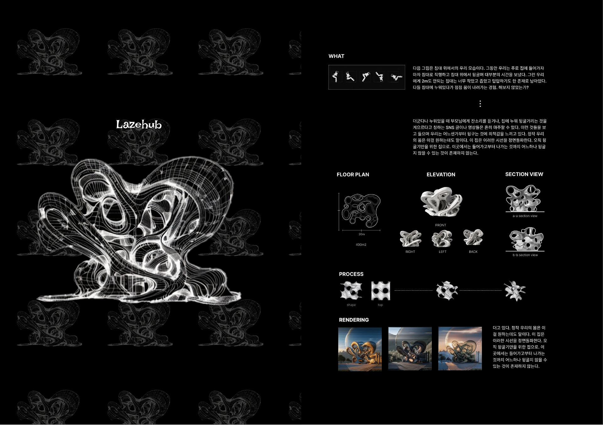
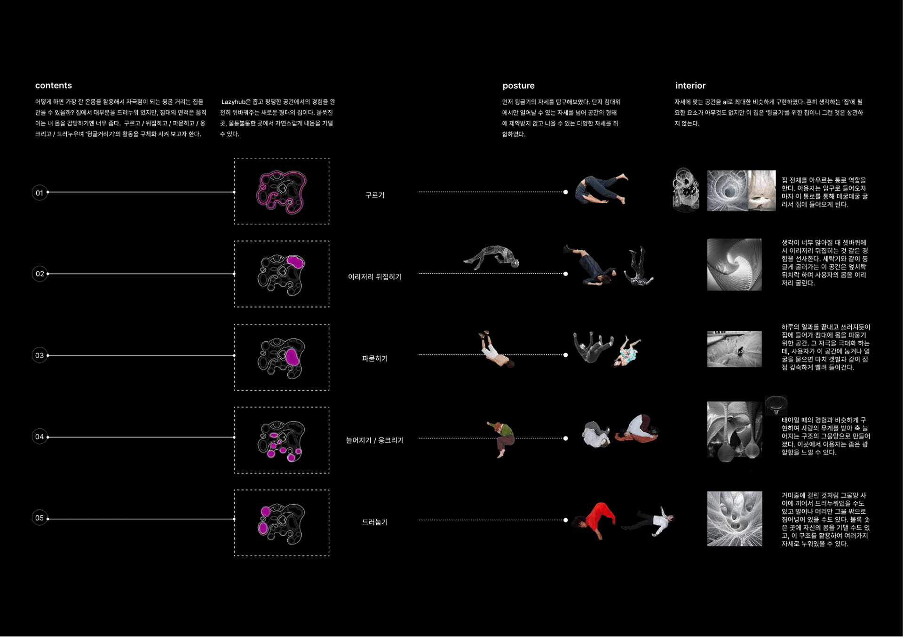

LazyHub
Lazehub is a spatial design project that explores unconscious body postures—such as lying down, rolling, and curling—that naturally occur within the domestic environment. Starting from movements on a bed, the project translates states of rest, fatigue, and recovery into architectural form. The space responds to changes in posture, allowing spatial density and direction to shift according to bodily movement. Organic, continuous geometries create an interior that invites the body to lean, settle, and flow intuitively. This project redefines rest not as a function, but as a bodily and sensory spatial experience.

